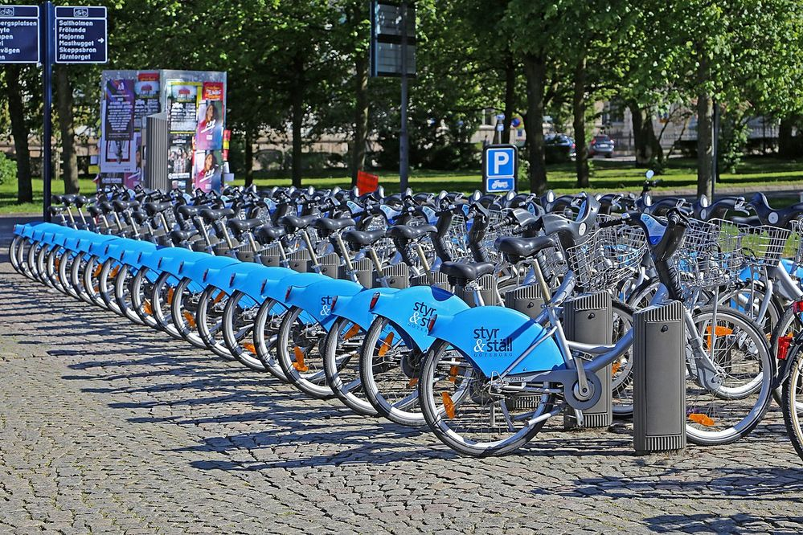
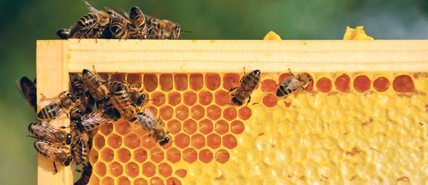

Created an interactive dashboard to visualize the data related to war between Russia and Ukraine using python, pandas, and
streamlit.
The dashboard will allow the user to view the statistics for various time periods of casualty numbers and equipment losses.

Its a Google Data Analytics Certification Project. In this project a Cyclistic dataset will be used and the data analysis process (Ask, Prepare, Process, Analyze, Share, Act) will be
implemented to develop the product

I successfully completed a data cleaning project utilizing SQL with the Nashville Housing Dataset.
This project involved performing various data operations, including joins, updates, alterations, drops, and counts.
This project showcases my proficiency in data cleaning and SQL data manipulation techniques.
In this project, the Road Accident Dataset is analyzed and visualized, sourced from Kaggle.
I efficiently managed and stored the data in SQL Server Management Studio (SSMS).
Using Excel for initial data exploration and Used Tableau for interactive visualizations.

I conducted data exploration with the COVID-19 dataset in SQL server.
This project involved analyzing and summarizing the data to uncover key insights about the COVID-19 pandemic.

I showcase my data cleaning expertise using Python with the FIFA 21 dataset from Kaggle.
I've meticulously cleaned and transformed this raw data, handling missing values, duplicates, ensuring its readiness for analysis.
This project highlights my commitment to data quality and preparation.

Its an Exploratory Data Analysis (EDA) project using Python with the Pandas library, focusing on the USA Crime dataset.
This project involved data exploration, visualization, and statistical analysis to gain insights into crime trends in the United States.

Its an EDA project with the USA Honey Production dataset.
This project involved data exploration, visualization, and statistical analysis to unveil key insights into honey production trends in the United States.
It showcases my proficiency in EDA techniques and data analysis.

This includes all of my Tableau projects